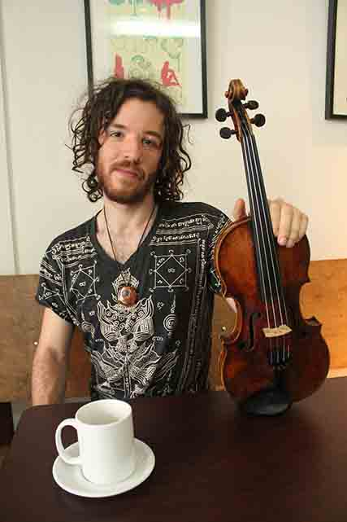
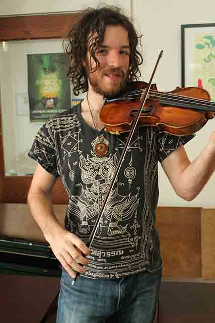

Article by Diana Whistance-Smith
Photos by Alina Bykova
Uploaded on April 3, 2014
Doug Penny gingerly picks up the violin lying across the café table. It is over 100 years old, and was passed down by grandfather. Now nestled in Penny’s hands, this violin is the principal instrument of his bands, Totemic and The Love Orchestra.
“I’ve been playing this one for 12 years and I feel really connected to it,” he says. “I pick it up and it feels like an extension of my arm.”
From progressive rock to blues to electronic, Doug Penny is both the violinist for the electronic band The Love Orchestra and a one-man operation for his own band Totemic.
Although he has been playing violin since the age of five, Penny picked up the electronic guitar in high school in order to play with a high school rock band. He dove into the electronic music scene after visiting old friends in Montreal, digging into various tracks and adding the violin’s flavor to them. Penny was offered to play violin to accompany some tracks produced by his friend Nick Newman, a DJ. It was at this point where Penny’s passion for electronic music took off.
The fifth-year Ryerson student has always preferred to be a little experimental with his work, like he was taught to do from a young age. “I took violin lessons for 12 years when I was a kid but my teacher was never big on traditional scales,” Penny says.
His favorite track from Totemic, Swamp Bells, consists of an abstract chime sound recorded and chopped several times, constituting the electronic ballad’s feel as a “base-y, swampy song”. Aside from the chime, the sounds were entirely synthesized and created by Penny himself.
From his first performance with his high school rock band to summer music festivals and DJ accompaniments, Penny has redefined improvisation in each of the mediums he’s performed.
“Everything I do on stage is improvised so I hear what’s going on and I play to go along with it, being able to tell when something’s in tune or what sounds good, I don’t really go into traditional scales. I just go by ear,” he explains.
This free-spirited computer science major hasn’t had difficulty balancing time between his love for music and his studies, and enjoys dressing up in animal suits and attending raves to quench his musical thirst.
Penny has experimented with several strings and percussion instruments over the years, but has settled on violin as the instrument that best suits his musical style.
Lately, he has been testing samples of birds chirping on the streets and various drum patterns that he’s discovered online. He relies on synthesizers as his domain for electronic creation, best catering to his quiet personality.
“Electronic definitely best suits me because I’m totally an introvert,” he describes. “I really like to make music when I’m alone at home, and electronic music is something that I can sit at my computer and make decent music by myself when I have that alone time, it suits my style the best.”
As for his future musical aspirations, Penny is hoping to support himself through touring and playing festivals, and form bonds with other music enthusiasts in exotic locations. After living in a Costa Rican eco-village with his wife recently, his perspective on music appreciation has been significantly infused.
“It was cool to live in a village that was completely ecologically sustainable with a community of amazing artists and musicians and people that are passionate about music, so I really see myself living there,” Penny says.
He and his wife, who is also an artist, aspire to live in an eco-village, work on their art and music, and eventually tour around music festivals when the time comes.
His words of wisdom for music hopefuls are to make plenty connections and have your material heard.
“Get yourself out there. A lot of artists make the mistake of staying in their room perfecting their music and making it sound good, especially the way the industry is now, you really need to know people,” he explains. “Getting out there, networking, and still having high quality performance but not just focusing on that over everything else.”

Spotlight Editor in Chief
Vjosa Isai
vjosa.isai@ryerson.ca
Want to get your time under the lights? Are you a writer looking to join the Artist Spotlight initiative? E-mail us at music@ryerson.ca to see how!